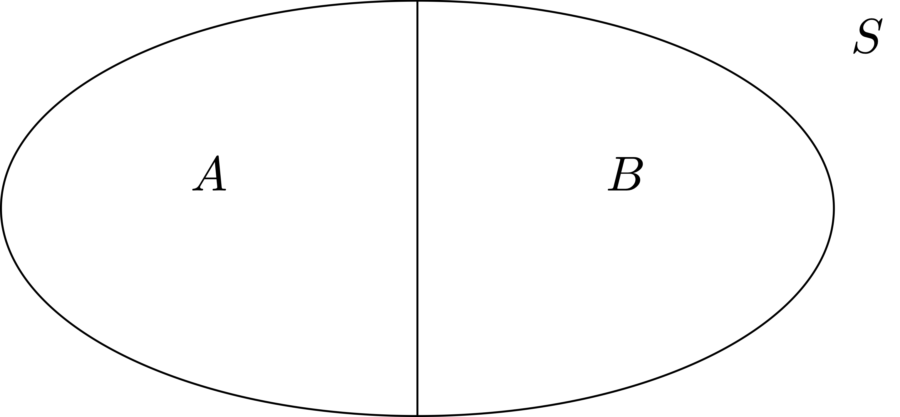

3 Real Numbers
In this chapter we introduce the system of Real Numbers \(\mathbb{R}\) and study some of its properties.
3.1 Fields
In order to introduce \(\mathbb{R}\), we need the concepts of binary operation and field. We proceed in a general setting, starting from a set \(K\).
Definition 1: Binary operation
Notation 2
There are two main binary operations we are interested in:
- Addition: denoted by \(+\). The addition, or sum of \(x,y \in K\) is denoted by \[ x + y \,. \]
- Multiplication: denoted by \(\cdot\). The multiplication, or product of \(x,y \in K\) is denoted by \[ x \cdot y \,\, \mbox{ or } \,\, xy\,. \]
Example 3: of binary operation
Binary operations take ordered pairs of elements of \(K\) as input. Therefore the operation \[ x \circ y \circ z \] does not make sense, since we do not know which one between \[ x \circ y \quad \mbox{ or } \quad y \circ z \] has to be performed first. Moreover the outcome of an operation depends on order: \[ x \circ y \neq y \circ x \,. \] This motivates the following definition.
Definition 4
Let \(K\) be a set and \(\circ \ \colon K \times K \to K\) be a binary operation on \(K\). We say that:
- \(\circ\) is commutative if \[ x \circ y = y \circ x \,, \quad \, \forall \, x,y \in K \]
- \(\circ\) is associative if \[ (x \circ y) \circ z = x \circ (y \circ z) \,, \quad \, \forall \, x,y,z \in K \]
- An element \(e \in K\) is called neutral element of \(\circ\) if \[ x \circ e = e \circ x = x \,, \quad \, \forall \, x \in K \]
- Let \(e\) be a neutral element of \(\circ\) and let \(x \in K\). An element \(y \in K\) is called an inverse of \(x\) with respect to \(\circ\) if \[ x \circ y = y \circ x = e \,. \]
Example 5
Let \(K\) with \(+\) and \(\cdot\) be as in Example 3. The sum satisfies:
- \(+\) is commutative, since \[ 0 + 1 = 1 + 0 = 0 \,. \]
- \(+\) is associative, since for example \[ (0 + 1) + 1 = 1 + 1 = 0 \,, \quad 0 + (1 + 1) = 0 + 0 = 0 \,, \] and therefore \[ (0 + 1) + 1 = 0 + (1 + 1) \,. \] In general one can show that \(+\) is associative by checking all the other permutations.
- The neutral element of \(+\) is \(0\), since \[ 0 + 0 = 0 \,, \quad 1 + 0 = 0 + 1 = 1 \,. \]
- Every element has an inverse. Indeed, the inverse of \(0\) is \(0\), since \[ 0 + 0 = 0\,, \] while the inverse of \(1\) is \(1\), since \[ 1 + 1 = 1 + 1 = 0 \,. \]
The multiplication satisfies:
- \(\cdot\) is commutative, since \[ 1 \cdot 0 = 0 \cdot 1 = 0 \,. \]
- \(\cdot\) is associative, since for example \[ (0 \cdot 1) \cdot 1 = 0 \cdot 1 = 0 \,, \quad 0 \cdot (1 \cdot 1) = 0 \cdot 1 = 0 \,, \] and therefore \[ (0 \cdot 1) \cdot 1 = 0 \cdot (1 \cdot 1) \,. \] By checking all the other permutations one can show that \(\cdot\) is associative.
- The neutral element of \(\cdot\) is \(1\), since \[ 0 \cdot 1 = 1 \cdot 0 = 0 \,, \quad 1 \cdot 1 = 1 \,. \]
- The element \(0\) has no inverse, since
\[ 0 \cdot 0 = 0 \cdot 1 = 1 \cdot 0 = 0\,, \] and thus we never obtain the neutral element \(1\). The inverse of \(1\) is given by \(1\), since \[ 1 \cdot 1 = 1 \,. \]
Example 6
We are ready to define fields.
Definition 7: Field
Let \(K\) be a set with binary operations of addition \[ +\ \colon K \times K \to K \,, \quad (x,y) \mapsto x + y \] and multiplication \[ \cdot\ \colon K \times K \to K \,, \quad (x,y) \mapsto x \cdot y = xy \,. \] We call the triple \((K, + , \cdot)\) a field if:
- The addition \(+\) satisfies: \(\,\forall \, x,y,z \in K\)
- (A1) Commutativity and Associativity: \[ x+y = y+x \] \[ (x+y)+z = x+(y+z) \]
- (A2) Additive Identity: There exists a neutral element in \(K\) for \(+\), which we call \(0\). It holds: \[ x + 0 = 0 + x = x \]
- (A3) Additive Inverse: There exists an inverse of \(x\) with respect to \(+\). We call this element the additive inverse of \(x\) and denote it by \(-x\). It holds \[ x + (-x) = (-x) + x = 0 \]
- The multiplication \(\cdot\) satisifes: \(\,\forall \, x,y,z \in K\)
- (M1) Commutativity and Associativity: \[ x \cdot y = y \cdot x \] \[ (x \cdot y) \cdot z = x \cdot (y \cdot z) \]
- (M2) Multiplicative Identity: There exists a neutral element in \(K\) for \(\cdot\), which we call \(1\). It holds: \[ x \cdot 1 = 1 \cdot x = x \]
- (M3) Multiplicative Inverse: If \(x \neq 0\) there exists an inverse of \(x\) with respect to \(\cdot\). We call this element the multiplicative inverse of \(x\) and denote it by \(x^{-1}\). It holds \[ x \cdot x^{-1} = x^{-1} \cdot x = 1 \]
- The operations \(+\) and \(\cdot\) are related by
- (AM) Distributive Property: \(\,\forall \, x,y,z \in K\) \[ x \cdot (y + z) = (x \cdot y) + (y \cdot z) \,. \]
Example 8
Let \(K\) with \(+\) and \(\cdot\) be as in Example 3. We can show that \((K,+,\cdot)\) is a field. Indeed we have already shown in Example 5 that:
- (A1) and (M1) hold,
- (A2) holds with neutral element \(0\),
- (M2) holds with neutral element \(1\),
- (A3) every element has an additive inverse, with \[ -0 = 0 \,, \quad - 1 = 1 \,, \]
- (M3) every element which is not \(0\) a multiplicative inverse, with \[ 1^{-1} = 1\,. \]
We are left to show the Distributive Property (AM). Indeed:
- (AM) For all \(y,z \in K\) we have \[ 0 \cdot (y + z) = 0 \,, \quad (0 \cdot y) + (0 \cdot z) = 0 + 0 = 0\,, \] and also \[ 1 \cdot (y + z) = y + z \,, \quad (1 \cdot y) + (1 \cdot z) = y + z \,. \] Thus (AM) holds.
Definition 9: Subtraction and division
Let \((K,+,\cdot)\) be a field. We define:
- Subtraction as the operation \(-\) defined by \[ x - y := x + (-y) \,, \quad \forall \, x , y \in K \,, \] where \(-y\) is the additive inverse of \(y\).
- Division as the operation \(/\) defined by \[ x/y := x \cdot y^{-1}\,, \quad \forall \, x , y \in K \,, \,\, y \neq 0 \,, \] where \(y^{-1}\) is the multiplicative inverse of \(y\).
Proposition 10: Uniqueness of neutral elements and inverses
Let \((K,+,\cdot)\) be a field. Then
- There is a unique element in \(K\) with the property of \(0\),
- There is a unique element in \(K\) with the property of \(1\),
- For all \(x \in K\) there is a unique additive inverse \(-x\),
- For all \(x \in K\), \(x \neq 0\), there is a unique multiplicative inverse \(x^{-1}\).
Proof
- Suppose that \(0 \in K\) and \(\widetilde{0} \in K\) are both neutral element of \(+\), that is, they both satisfy (A2). Then \[ 0 + \widetilde{0} = 0 \] since \(\widetilde{0}\) is a neutral element for \(+\). Moreover \[ \widetilde{0} + 0 = \widetilde{0} \] since \(0\) is a neutral element for \(+\). By commutativity of \(+\), see property (A1), we have \[ 0 = 0 + \widetilde{0} = \widetilde{0} + 0 = \widetilde{0} \,, \] showing that \(0 = \widetilde{0}\). Hence the neutral element for \(+\) is unique.
- Exercise.
- Let \(x \in K\) and suppose that \(y, \widetilde{y} \in K\) are both additive inverses of \(x\), that is, they both satisfy (A3). Therefore \[ x + y = 0 \] since \(y\) is an additive inverse of \(x\) and \[ x + \widetilde{y} = 0 \] since \(\widetilde{y}\) is an additive inverse of \(x\). Therefore we can use commutativity and associativity and of \(+\), see property (A1), and the fact that \(0\) is the neutral element of \(+\), to infer \[\begin{align*} y & = y + 0 = y + (x + \widetilde{y}) \\ & = (y + x) + \widetilde{y} = (x + y) + \widetilde{y} \\ & = 0 + \widetilde{y} = \widetilde{y} \,, \end{align*}\] concluding that \(y = \widetilde{y}\). Thus there is a unique additive inverse of \(x\), and \[ y = \widetilde{y} = -x \,, \] with \(-x\) the element from property (A3).
- Exercise.
Using the properties of field we can also show that the usual properties of sum, subtraction, multiplication and division still hold in any field. We list such properties in the following proposition.
Proposition 11: Properties of field operations
Let \((K,+,\cdot)\) be a field. Then for all \(x,y,z \in K\),
- \(x + y = x + z \,\, \implies \,\, y = z\)
- \(x \cdot y = x \cdot z \,\) and \(\,x \neq 0 \,\, \implies \,\, y = z\)
- \(- 0 = 0\)
- \(1^{-1} = 1\)
- \(x \cdot 0 = 0\)
- \(-1 \cdot x = -x\)
- \(-(-x) = x\)
- \((x^{-1})^{-1} = x \,\) if \(\, x \neq 0\)
- \((x \cdot y)^{-1} = x^{-1} \cdot y^{-1}\)
The above properties can be all proven with elementary use of the field properties (A1)-(A3), (M1)-(M3) and (AM). This is an exercise in patience, and is left to the reader.
Let us conclude with examining the sets of numbers introduced in Chapter 1.
Theorem 12
Consider the sets \(\mathbb{N}\), \(\mathbb{Z}\), \(\mathbb{Q}\) with the usual operations \(+\) and \(\cdot\). We have:
- \((\mathbb{N}, + , \cdot)\) is not a field:
It satisfies properties (A1), (A2), (M1), (M2), (AM) of fields. It is missing properties (A3) and (M3), the additive and multiplicative inverse properties, respectively. - \((\mathbb{Z}, + , \cdot)\) is not a field:
It satisfies properties (A1), (A2), (A3), (M1), (M2), (AM) of fields. Thus it is only missing (M3), the multiplicative inverse property. - \((\mathbb{Q}, + , \cdot)\) is a field.
The proof is omitted.
3.2 Ordered fields
Definition 13
Let \(K\) be a set with binary operations \(+\) and \(\cdot\), and with an order relation \(\leq\). We call \((K,+,\cdot,\leq)\) an ordered field if:
\((K,+,\cdot)\) is a field
There \(\leq\) is of total order on \(K\): \(\, \forall \, x, y, z \in K\)
- (O1) Reflexivity: \[ x \leq x \]
- (O2) Antisymmetry: \[ x \leq y \, \mbox{ and } \, y \leq x \,\, \implies \,\, x = y \]
- (O3) Transitivity: \[ x \leq y \,\, \mbox{ and } \,\, y \leq z \,\, \implies \,\, x = z \]
- (O4) Total order:
\[ x \leq y \,\, \mbox{ or } \,\, y \leq x \]
The operations \(+\) and \(\cdot\), and the total order \(\leq\), are related by the following properties: \(\, \forall x, y, z \in K\)
- (AM) Distributive: Relates addition and multiplication via \[ x \cdot (y + z) = x \cdot y + x \cdot z \]
- (AO) Relates addition and order with the requirement: \[ x \leq y \,\, \implies \,\, x + z \leq y + z \]
- (MO) Relates multiplication and order with the requirement: \[ x \geq 0, \, y \geq 0 \,\, \implies \,\, x \cdot y \geq 0 \]
Example 14
3.3 Cut Property
We have just introduced the notion of field, and noted that the set of rational numbers with the usual operations \[ (\mathbb{Q}, + , \cdot) \] is a field.
We now need to address the key issue we proved in Chapter 1, that is, that \[ \sqrt{2} \notin \mathbb{Q}\,. \] This means that \(\mathbb{Q}\) has gaps, and cannot be represented as a continuous line. The rigorous definition of lack of gaps needs the concept of cut of a set.
Definition 15: Partition of a set

Definition 16: Cut of a set
Let \(S\) be a non-empty set with a total order relation \(\leq\). The pair \((A,B)\) is a cut of \(S\) if
- \((A,B)\) is a partition of \(S\),
- We have \[ a \leq b \,, \quad \forall \, a \in A \,, \,\, \forall \, b \in B \,. \]
The cut of a set is often called Dedekind cut, named after Richard Dedekind, who used cuts to give an explicit construction of the real numbers \(\mathbb{R}\), see Wikipedia page.
Definition 17: Cut property
Example 18

Question 19
The answer to the above question is NO. For example the pair \[ A = (-\infty,\sqrt{2}) \cap \mathbb{Q}\,, \quad B = (\sqrt{2},\infty) \cap \mathbb{Q}\,. \tag{3.1}\] is a cut of \(\mathbb{Q}\), since \(\sqrt{2} \notin \mathbb{Q}\). However what is the separator? It should be \(s = \sqrt{2}\), given that clearly \[ a \leq \sqrt{2} \leq b \,, \quad \forall \, a \in A\,, \,\, \forall \, b \in B \,. \] However \(\sqrt{2} \notin \mathbb{Q}\), so we are NOT ALLOWED to take it as separator. Indeed, we can show that \((A,B)\) defined as in (3.1) has no separator.
Theorem 20: \(\mathbb{Q}\) does not have the cut property.
Remark 21: Ideas for the proof of Theorem 20
We will consider the cut \((A,B)\) in (3.1). We then assume by contradiction that \((A,B)\) admits a separator \(L \in \mathbb{Q}\), so that \[ a \leq L \leq b \,, \quad \forall \, a \in A\,, \,\, \forall \, b \in B \,. \tag{3.2}\] Since \((A,B)\) is a partition of \(\mathbb{Q}\), then either \(L \in A\) or \(L \in B\). These will both lead to a contradiction:
If \(L \in A\), by definition of \(A\) we have \[ L < \sqrt{2} \,. \] We want to contradict the fact that \(L\) is a separator for the cut \((A,B)\). The idea is that \(\sqrt{2} \notin \mathbb{Q}\), and therefore it is possible to find a rational number \(\widetilde{L}\) such that \[ L < \widetilde{L} < \sqrt{2} \,. \] How do we find such \(\widetilde{L}\) in practice? We look for a number \(\widetilde{L}_n\) of the form \[ \widetilde{L}_n = 1 + \frac{1}{n} \] for some \(n \in \mathbb{N}\) to be suitably chosen later. Clearly \(\widetilde{L}_n \in \mathbb{Q}\) and \[ L < \widetilde{L}_n \] for all \(n \in \mathbb{N}\). We need to prove that we can find \(n_0 \in \mathbb{N}\) such that \[ L < \widetilde{L}_{n_0} < \sqrt{2} \,. \tag{3.3}\] This is indeed possible: There exists \(n_0 \in \mathbb{N}\) such that (3.3) holds. From (3.3) we see that \(\widetilde{L}_{n_0} \in A\). Since \(L\) is a separator, from (3.2) we obtain \[ \widetilde{L}_{n_0} \leq L \,, \] which contradicts (3.3).
If \(L \in B\), by definition of \(B\) we have \[ \sqrt{2} < L \,. \] The idea is the same as above: Since \(\sqrt{2} \notin \mathbb{Q}\), we can find \(\widetilde{L} \in \mathbb{Q}\) such that \[ \sqrt{2} < \widetilde{L} < L \,. \] Since we want \(\widetilde{L}\) to be a rational number smaller than \(L\), we look for \(\widetilde{L}\) of the form \[ \widetilde{L}_n := L - \frac{1}{n} \,, \] for a suitable \(n \in \mathbb{N}\). This satisfies \(\widetilde{L}_n \in \mathbb{Q}\) and \[ \widetilde{L}_n < L \,, \] for all \(n \in \mathbb{N}\). We then find \(n_0 \in \mathbb{N}\) such that \[ \sqrt{2} < \widetilde{L}_{n_0} < L \,. \tag{3.4}\] The above shows that \(\widetilde{L}_{n_0} \in B\). As \(L\) is a separator, we find that \[ L \leq \widetilde{L}_{n_0} \,, \] which contradicts (3.4).
Therefore, both cases \(L \in A\) or \(L \in B\) lead to a contradiction. Since these are all the possibilities, we conclude that the cut \((A,B)\) has no separator in \(\mathbb{Q}\).
Time to make the ideas in the above remark rigorous.
Proof: Proof of Theorem 20
Step 1. \((A,B)\) is a cut of \(\mathbb{Q}\):
We need to prove the following:
- \((A,B)\) is a partition of \(\mathbb{Q}\). This is because \(A , B \subseteq \mathbb{Q}\) with \(A \neq \emptyset\) and \(B \neq \emptyset\). Moreover \(A \cap B = \emptyset\) and \[ A \cup B = \mathbb{Q}\,, \] given that \(\sqrt{2} \notin \mathbb{Q}\), and so there is no element \(q \in \mathbb{Q}\) such that \(q^2 = 2\).
- It holds \[
a \leq b \,, \quad \forall a \in A \,, \,\, \forall \, b \in B \,.
\] Indeed, suppose that \(a \in A\) and \(b \in B\). We have two cases:
- \(a \in A_1\): Therefore \(a<0\). In particular \[ a < 0 < b\,, \] given that \(b > 0\) for all \(b \in B\). Thus \(a<b\).
- \(a \in A_2\): Therefore \(a \geq 0\) and \(a^2 < 2\). In particular \[ a^2 < 2 < b^2 \,, \] since \(b^2>2\) for all \(b \in B\). In particular \[ a^2 < b^2 \,. \] Since \(b>0\) for all \(b \in B\), from the above inequality we infer \(a<b\), concluding.
Step 2. \((A,B)\) has no separator:
Suppose by contradiction that \((A,B)\) admits a separator \[
L \in \mathbb{Q}\,.
\] By definition this means \[
a \leq L \leq b \,, \quad \forall a \in A \,, \,\, \forall \, b \in B \,.
\tag{3.5}\] Since \[
L \in \mathbb{Q}\,, \quad \mathbb{Q}= A \cup B \,, \quad A \cap B = \emptyset \,,
\] then either \(L \in A\) or \(L \in B\). We will see that both these possibilities lead to a contradiction:
Case 1: \(L \in A\).
By (3.5) we know that \[
a \leq L \,, \quad \forall \, a \in A \,.
\tag{3.6}\] In particular the above implies \[
L \geq 0
\tag{3.7}\] since \(0 \in A\). Therefore we must have \(L \in A_2\), that is, \[
L \geq 0 \,\, \mbox{ and } \,\, L^2 < 2 \,.
\tag{3.8}\] Set \[
\widetilde{L} := L + \frac1n
\] for \(n \in \mathbb{N}\), \(n \neq 0\) to be chosen later. Clearly we have \[
\widetilde{L} \in \mathbb{Q}\,\,\, \mbox{ and } \,\,\, L < \widetilde{L} \,.
\tag{3.9}\] From (3.7) and (3.9) we have also \[
\widetilde{L}>0 \,.
\tag{3.10}\] We now want to show that there is a choice of \(n\) such that \(\widetilde{L}^2 < 2\), which will lead to a contradiction. Indeed, we can estimate \[\begin{align*}
\widetilde{L}^2 & = \left( L + \frac1n \right)^2 \\
& = L^2 + \frac{1}{n^2} + 2 \frac{L}{n} \\
& < L^2 + \frac{1}{n} + 2 \frac{L}{n} \qquad \left(\mbox{using } \, \frac{1}{n}<\frac{1}{n^2} \right) \\
& = L^2 + \frac{2L + 1}{n} \,.
\end{align*}\] If we now impose that \[
L^2 + \frac{2L + 1}{n} < 2 \,,
\] we can rearrange the above and obtain \[
n(2 - L^2) > 2L + 1 \,.
\] Now note that \(L^2 < 2\) by assumption (3.8). Thus we can divived by \((2 - L^2)\) and obtain \[
n >\frac{2L + 1}{2 - L^2} \,.
\] Therefore we have just shown that \[
n >\frac{2L + 1}{2 - L^2} \,\, \implies \,\, \widetilde{L}^2 < 2 \,.
\] Together with (3.10) this implies \(\widetilde{L} \in A\). Therefore we have \[
\widetilde{L} \leq L
\] by (3.6). On the other hand it also holds \[
\widetilde{L} > L
\] by (3.9), and therefore we have a contradiction. Thus \(L \notin A\).
Case 2: \(L \in B\).
As \(L \in B\), we have by definition \[
L > 0 \,, \quad L^2 > 2 \,.
\tag{3.11}\] Moreover since \(L\) is a separator, see (3.5), in particular \[
L \leq b \,, \,\, \forall \, b \in B \,.
\tag{3.12}\] Define now \[
\widetilde{L} := L - \frac1n
\] with \(n \in \mathbb{N}\), \(n \neq 0\) to be chosen later. Clearly we have \[
\widetilde{L} \in \mathbb{Q}\,, \quad \widetilde{L} < L \,.
\tag{3.13}\] We now show that \(n\) can be chosen so that \(\widetilde{L} \in B\). Indeed \[\begin{align*}
\widetilde{L}^2 & = \left( L - \frac1n \right)^2 \\
& = L^2 + \frac{1}{n^2} - 2 \frac{L}{n} \\
& > L^2 - \frac{1}{n^2} - 2 \frac{L}{n} \qquad \left(\mbox{using } \, \frac{1}{n^2} > - \frac{1}{n^2} \right) \\
& > L^2 - \frac{1}{n} - 2 \frac{L}{n} \qquad \left(\mbox{using } \, -\frac{1}{n^2} > - \frac{1}{n} \right) \\
& = L^2 - \frac{1 + 2L}{n} \,.
\end{align*}\] Now we impose \[
L^2 - \frac{1 + 2L}{n} > 2
\] which is equivalent to \[
n(L^2 - 2) > 1 + 2L \,.
\] Since we are assuming \(L \in B\), then \(L^2 > 2\), see (3.11). Therefore we can divide by \((L^2 -2)\) and get \[
n > \frac{1+2L}{L^2 - 2} \,.
\] In total, we have just shown that \[
n > \frac{1+2L}{L^2 - 2} \quad \implies \quad \widetilde{L}^2 > 2\,,
\] proving that \(\widetilde{L} \in B\). Therefore by (3.12) we get \[
L \leq \widetilde{L} \,.
\] This contradicts (3.13).
Conclusion:
We have seen that assuming that \((A,B)\) has a separator \(L \in \mathbb{Q}\) leads to a contradiction. Thus the cut \((A,B)\) has no separator.
Remark 22
3.4 Supremum and infimum
A crucial definition in Analysis is the one of supremum or infimum of a set. This is also another way of studying the gaps of \(\mathbb{Q}\).
Example 23: Intuition about supremum and infimum
Consider the set \[ A = [0,1) \cap \mathbb{Q}\,. \] Intuitively, we understand that \(A\) is bounded, i.e. not infinite. We also see that
- \(0\) is the lowest element of \(A\)
- \(1\) is the highest element of \(A\)
However we see that \(0 \in A\) while \(1 \notin A\). We will see that
- \(0\) can be defined as the infimum and minimum of \(A\).
- \(1\) can be defined as the supremum, but not maximum, of \(A\).
3.4.1 Upper bound, supremum, maximum
We start by defining the supremum. First we need the notion of upper bound of a set.
Definition 24: Upper bound and bounded above
Let \((K,+,\cdot,\leq)\) be an ordered field and \(A \subseteq K\):
- We say that \(b \in K\) is an upper bound for \(A\) if \[ a \leq b \,, \quad \forall \, a \in A \,. \]
- We say that \(A\) is bounded above if there exists and upper bound \(b \in K\) for \(A\).
Definition 25: Supremum
Let \((K,+,\cdot,\leq)\) be an ordered field and \(A \subseteq K\). A number \(s \in K\) is called least upper bound or supremum of \(A\) if:
- \(s\) is an upper bound for \(A\),
- \(s\) is the smallest upper bound of \(A\), that is, \[ \mbox{If } \, b \in K \, \mbox{ is upper bound for } \, A \, \mbox{ then } \, s \leq b \,. \]
Notation 26
Remark 27
Proposition 28
Proof
- Since \(s_2 = \sup A\), in particular \(s_2\) is an upper bound for \(A\). Since \(s_1 = \sup A\) then \(s_1\) is the lowest upper bound. Thus we get \[ s_1 \leq s_2 \,. \]
- Exchanging the roles \(s_1\) and \(s_2\) in the above reasoning we also get \[ s_2 \leq s_1 \,. \]
This shows \(s_1 = s_2\).
Warning
- A set can have infinite upper bounds,
- The supremum does not belong to the set.
For example \[ A = [0,1) \cap \mathbb{Q} \] has for upper bounds all the numbers \(b \in \mathbb{Q}\) with \(b>1\). Moreover one can show that \[ \sup A = 1\,, \] and so \[ \sup A \notin A \,. \]
Warning
Definition 29: Maximum
Proposition 30
Proof
- By definition we have \(M \in A\) and \[ a \leq M \,, \quad \forall \, a \in A \,. \] In particular the above tells us that \(M\) is an upper bound of \(A\).
- We claim that \(M\) is the least upper bound. Indeed, suppose \(b\) is an upper bound of \(A\), that is,
\[ a \leq b \,, \quad \forall \, a \in A \,. \] In particular, since \(M \in A\), by the above condition we have \[ M \leq b \,. \]
Therefore \(M\) is the least upper bound of \(A\), meaning that \(M = \sup A\).
Warning
3.4.2 Lower bound, infimum, minimum
We now introduce the definitions of lower bound, infimum, minimum. These are the counterpart of upper bound, supremum and maximum, respectively.
Definition 31: Upper bound, bounded below, infimum, minimum
Let \((K,+,\cdot,\leq)\) be an ordered field and \(A \subseteq K\):
We say that \(l \in K\) is a lower bound for \(A\) if \[ l \leq a \,, \quad \forall \, a \in A \,. \]
We say that \(A\) is bounded below if there exists a lower bound \(l \in K\) for \(A\).
We say that \(i \in K\) is the greatest lower bound or infimum of \(A\) if:
- \(i\) is a lower bound for \(A\),
- \(i\) is the largest lower bound of \(A\), that is, \[ \mbox{If } \, l \in K \, \mbox{ is a lower bound for } \, A \, \mbox{ then } \, l \leq i \,. \] If it exists, the infimum is denoted by \[ i = \inf A \,. \]
We say that \(m \in K\) is the minimum of \(A\) if: \[ m \in A \,\, \mbox{ and } \,\, m \leq a \,, \, \forall a \in A \,. \] If it exists, we denote the minimum by \[ m = \min A \,. \]
Proposition 32
Let \((K,+,\cdot,\leq)\) be an ordered field and \(A \subseteq K\):
- If \(\inf A\) exists, then it is unique.
- If the minimum of \(A\) exists, then also the infimum exists, and \[ \inf A = \min A \,. \]
The proof uses similar arguments to the one employed in the previous section, and is left to the reader as an exercise.
Warning
- A set can have infinite lower bounds,
- The infimum does not belong to the set.
For example \[ A = (0,1) \cap \mathbb{Q} \] has for lower bounds all the numbers \(b \in \mathbb{Q}\) with \(b<1\). Moreover we will show that \[ \inf A = 0\,, \] and so \[ \inf A \notin A \,. \]
Warning
Warning
Proposition 33
The proof is simple, and is left as an exercise. We now have a complete picture about supremum and infimum, see figure below.
We conclude with another simple proposition. The proof is again left to the reader.
Proposition 34: Relationship between sup and inf
Let \((K,+,\cdot,\leq)\) be an ordered field and \(A \subseteq K\). Define \[ - A := \{ - a \, \colon \,a \in A \} \,. \] It holds:
- If \(\sup A\) exists, then \(\inf A\) exists and \[ \inf(-A) = - \sup A \,. \]
- If \(\inf A\) exists, then \(\sup A\) exists and \[ \sup(-A) = - \inf A \,. \]
3.5 Completeness
We have introduced the concepts of supremum and infimum on an ordered field \(K\).
Question 35
The answer to the above question is NO. Like we did with the Cut Property, the counterexample can be found in the set of rational numbers \(\mathbb{Q}\). A set bounded above for which the supremum does nor exist is, for example, \[ A = [0, \sqrt{2}) \cap \mathbb{Q}\,. \tag{3.14}\]
Theorem 36
There exists a set \(A \subseteq \mathbb{Q}\) such that
- \(A\) is non-empty,
- \(A\) is bounded above,
- \(\sup A\) does not exist in \(\mathbb{Q}\).
The proof uses the same ideas we used for showing that \(\mathbb{Q}\) does not have the Cut Property.
Proof
Step 1. \(A\) is bounded above.
Take \(b:=9\). Then \(b\) is an upper bound for \(A\). Indeed by definition \[
q^2 < 2 \,, \,\, q \geq 0 \,, \,\,\, \forall q \in A \,.
\] Therefore \[
q^2 < 2 < 9 \implies q^2 < 9 \implies q < 3 = b \, .
\]
Step 2. \(\sup A\) does not exist.
Assume by contradiction that \[
s = \sup A \in \mathbb{Q}
\] exists. By definition it holds \[
s \geq q \,, \quad \forall \, q \in A
\tag{3.15}\] \[
b \geq q \,, \, \forall \, q \in A \,\, \implies \,\,
s \leq b
\tag{3.16}\] There are two possibilities: \(s \in A\) or \(s \notin A\):
Case 1. \(s \in A\).
If \(s \in A\) by definition \[ s \geq 0\,, \quad s^2 < 2 \,. \tag{3.17}\] Define \[ \widetilde{s} := s + \frac{1}{n} \] with \(n \in \mathbb{N}\), \(n \neq 0\) to be chosen later. Then \[\begin{align*} \widetilde{s}^2 & = \left( s + \frac1n \right)^2 \\ & = s^2 + \frac{1}{n^2} + 2 \frac{s}{n} \\ & < s^2 + \frac{1}{n} + 2 \frac{s}{n} \qquad \left(\mbox{using } \, \frac{1}{n}<\frac{1}{n^2} \right) \\ & = s^2 + \frac{2s + 1}{n} \,. \end{align*}\] If we now impose that \[ s^2 + \frac{2s + 1}{n} < 2 \,, \] we can rearrange the above and obtain \[ n(2 - s^2) > 2s + 1 \,. \] Now note that \(s^2 < 2\) by assumption (3.17). Thus we can divide by \((2 - s^2)\) and obtain \[ n >\frac{2s + 1}{2 - s^2} \,. \] To summarize, we have just shown that \[ n >\frac{2s + 1}{2 - s^2} \,\, \implies \,\, \widetilde{s}^2 < 2 \,. \] Moreover \(\widetilde{s} := (s + 1/n) \in \mathbb{Q}\). Therefore \[ \widetilde{s} \in A \,. \] Since \(s = \sup A\), we then have \[ \widetilde{s} \leq s \,. \] However \[ \widetilde{s} := s + \frac{1}{n} > s \,, \] yielding a contradiction. Thus \(s \in A\) is not possible.Case 2. \(s \notin A\).
If \(s \notin A\), by the fact that \(s = \sup A\) and by definition of \(A\) we get \[ s > 0 \,, \quad s^2 > 2 \,. \tag{3.18}\]
Define \[ \widetilde{s} := s - \frac{1}{n} \,. \] We have \[\begin{align*} \widetilde{s}^2 & = \left( s - \frac1n \right)^2 \\ & = s^2 + \frac{1}{n^2} - 2 \frac{s}{n} \\ & > s^2 - \frac{1}{n^2} - 2 \frac{s}{n} \qquad \left(\mbox{using } \, \frac{1}{n^2} > - \frac{1}{n^2} \right) \\ & > s^2 - \frac{1}{n} - 2 \frac{s}{n} \qquad \left(\mbox{using } \, -\frac{1}{n^2} > - \frac{1}{n} \right) \\ & = s^2 - \frac{1 + 2s}{n} \,. \end{align*}\] Now we impose \[ s^2 - \frac{1 + 2s}{n} > 2 \] which is equivalent to \[ n(s^2 - 2) > 1 + 2s \,. \] By (3.18) we have \(s^2 > 2\). Therefore we can divide by \((s^2 -2)\) and get \[ n > \frac{1+2s}{s^2 - 2} \,. \] In total, we have just shown that \[ n > \frac{1+2s}{s^2 - 2} \quad \implies \quad \widetilde{s}^2 > 2\,. \] Therefore \(\widetilde{s} \notin A\), and by definition of \(A\) we have \[ \widetilde{s} \geq q \,, \quad \forall q \in A\,. \] Moreover \(\widetilde{s} := (s - 1/n) \in \mathbb{Q}\). Therefore \(\widetilde{s}\) is an upper bound of \(A\) in \(\mathbb{Q}\). Since \(s=\sup A\) is the smallest upper bound, see (3.16), it follows \[ s \leq \widetilde{s} \,. \] However \[ \widetilde{s} := s - \frac{1}{n} < s \,, \] obtaining a contradiction. Then \(s \notin A\).
Conclusion.
We have assumed by contradiction that \(s = \sup A\) exists in \(\mathbb{Q}\). In this case either \(s \in A\) or \(s \notin A\). In both cases we found a contradiction. Therefore \(\sup A\) does not exist.
The above theorem shows that the supremum does not necessarily exist. What about the infimum?
Question 37
The answer to the above question is again NO. A set bounded below for which the infimum does nor exist is, for example, \[ A = (\sqrt{2}, 10] \cap \mathbb{Q}\,. \] The proof of this fact is, of course, very similar to the one of Theorem 36, and is therefore omitted.
Thus infimum and supremum do not exist in general. The fields for which all the bounded sets admit supremum or infimum are called complete.
Definition 38: Completeness
Let \((K,+,\cdot,\leq)\) be an ordered field. We say that \(K\) is complete if it holds the property:
- (AC) For every \(A \subseteq K\) non-empty and bounded above \[ \sup A \in K \,. \]
Notation 39
We have that:
- Property (AC) is called Axiom of Completeness
- If \(K\) is an ordered field in which (AC) holds, then \(K\) is called a complete ordered field
Notice that if the Axiom of Completeness holds, then also the infimum exists. This is shown in the following proposition.
Proposition 40
Proof
3.6 Equivalence of Completeness and Cut Property
We can show that Completeness is equivalent to the Cut Property. Such result is not essential, but its proof is very instructive.
Theorem 41: Equivalence of Cut Property and Completeness
Let \((K,+,\cdot, \leq)\) be an ordered field. Then they are equivalent:
- \(K\) has the Cut Property
- \(K\) is Complete
Remark 42: Ideas for proving Theorem 41
Step 1. Cut Property \(\implies\) Completeness. Suppose \(K\) has the Cut Property. To prove that \(K\) is Complete, we need to:
Consider an arbitrary set \(A \subseteq K\) such that \(A \neq \emptyset\) and \(A\) is bounded above.
Show that \(A\) has a supremum.
To achieve this, consider the set \[ B := \{ b \in K \, \colon \,b \geq a \,, \,\, \forall a \in A \} \,, \] which is the set of Upper Bounds of \(A\). We can show that the pair \[ (B^c,B) \] is a Cut of \(K\). As \(K\) has the Cut Property, then there exists \(s \in K\) separator of \((B^c,B)\). We will show that the separator \(s\) is the supremum of \(A\) \[ s = \sup A \,. \] Thus \(K\) is complete. See Figure 3.1 for a schematic picture of the above construction.
Step 2. Completeness \(\implies\) Cut Property. Conversely, suppose that \(K\) is Complete. To prove that \(K\) has the Cut Property, we need to:
- Consider a cut \((A,B)\) of \(K\).
- Show that \((A,B)\) has a separator \(s \in K\).
This implication is easier. Indeed, since \(A\) is non-empty and bounded above, by Completeness there exists \[ \sup A \in K \,. \] We will show that \[ s := \sup A \] is a separator for the cut \((A,B)\). See Figure 3.2 for a schematic picture of the above construction.
Keeping the above ideas in mind, let us proceed with the proof.
Proof: Proof of Theorem 41
We need to prove that \(K\) is complete. To this end, consider \(A \subseteq K\) non-empty and bounded above. Define the set of upper bounds of \(A\): \[ B := \{ b \in K \, \colon \,b \geq a \,, \,\, \forall a \in A \} \,. \]
Claim. The pair \((B^c,B)\) is a cut of \(K\).
Proof of Claim. We have to prove two points:
- \((B^c,B)\) forms a partition of \(K\).
Indeed, we have \(B \neq \emptyset\), since \(A\) is bounded above. Further, we have \(B^c \neq \emptyset\), since \(A\) is non-empty. Thus \[ K = B^c \cup B \,, \quad B^c \cap B = \emptyset \,. \] Then \((B^c,B)\) is a partition of \(K\).
- We have \[ x \leq y \,, \quad \forall \, x \in B^c\,, \,\forall \, y \in B \,. \tag{3.19}\]
To show the above, let \(x \in B^c\) and \(y \in B\). By definition of \(B\) we have that elements of \(B^c\) are not upper bounds of \(A\). Therefore \(x\) is not an upper bound. This means there exists \(\widetilde{a} \in A\) which is larger than \(x\), that is, \[ x \leq \widetilde{a} \,. \] Since \(y \in B\), then \(y\) is an upper bound for \(A\), so that \[ a \leq y \,, \,\, \forall a \in A\,. \] Therefore \[ x \leq \widetilde{a} \leq y \,, \] concluding (3.19).
Thus \((B^c,B)\) is a cut of \(K\) and the claim is proven.
Since \((B^c,B)\) is a cut of \(K\), by the Cut Property there exists a separator \(s \in K\) such that \[ x \leq s \leq y \,, \quad \forall \, x \in B^c\,, \,\forall \, y \in B \,. \tag{3.20}\]
Claim. \(s\) is an upper bound for \(A\).
Proof of Claim.
Suppose by contradiction that \(s\) is not an upper bound for \(A\). Therefore by definition of upper bound, there exists \(\widetilde{a} \in A\) such that \[
s < \widetilde{a} \,.
\] Consider the mid-point between \(s\) and \(\widetilde{a}\), that is, \[
m:=\frac{s + \widetilde{a}}{2} \in K \,.
\] Since \(m\) is the mid-point between \(s\) and \(\widetilde{a}\), and \(s < \widetilde{a}\), it holds \[
s < m < \widetilde{a} \,.
\]
Indeed, since \(s < \widetilde{a}\) then \[ s = \frac{2s}{2} < \frac{s + \widetilde{a}}{2} < \frac{2 \widetilde{a}}{2} = \widetilde{a} \,. \]
In particular the above tells us that \(m\) is not an upper bound for \(A\), given that \(\widetilde{a} \in A\) and \(m < \widetilde{a}\). Therefore \(m \in B^c\), by definition of \(B^c\). Therefore(3.20) implies \[ m \leq s \,, \] which contradicts \(s < m\). Hence \(s\) is an upper bound of \(A\), concluding the proof of Claim.
Conclusion. We have shown that \(s\) is an upper bound of \(A\). Condition
(3.20) tells us that \[
s \leq y \,, \,\, \forall y \in B \,.
\] Recalling that \(B\) is the set of upper bounds of \(A\), this means that \(s\) is the smallest upper bound of \(A\), that is, \[
s = \sup A \in K \,.
\]
Step 2. Completeness \(\implies\) Cut Property.
Suppose \(K\) is complete. We need to show that \(K\) has the Cut Property. Therefore assume \((A,B)\) is a cut of \(K\), that is, \[
A \neq \emptyset\,, \quad B \neq \emptyset \,,
\] \[
K = A \cup B\,, \quad A \cap B = \emptyset \,,
\] \[
a \leq b \,, \quad \forall a \in A \,, \,\, \forall \, b \in B \,.
\tag{3.21}\] Since \(B \neq \emptyset\), from (3.21) it follows that \(A\) is bounded above: indeed, every element of \(B\) is an upper bound for \(A\), thanks to (3.21). Since \(A \neq \emptyset\), by the Axiom of Completeness we have \[
s = \sup A \in K \,.
\] In particular, by definition of supremum, we have \[
a \leq s \,, \,\, \forall \, a \in A \,.
\] Let now \(b \in B\) be arbitrary. From (3.21) we have that \[
a \leq b \,, \,\, \forall \, a \in A \,.
\tag{3.22}\] Therefore \(b\) is an upper bound of \(A\). Since \(s = \sup A\), we have that \(s\) is the smallest upper bound, and so \[
s \leq b \,.
\] Given that \(b \in B\) was arbitrary, it actually holds \[
s \leq b \,, \,\, \forall \, b \in B \,.
\tag{3.23}\] From (3.22) and (3.23) we therefore have \[
a \leq s \leq b \,, \,\, \forall a \in A \,, \, \forall \, b \in B \,,
\] showing that \(s\) is a separator of \((A,B)\). Thus \(K\) has the Cut Property.
3.7 Axioms of Real Numbers
We now have all the key elements to introduce the Real Numbers \(\mathbb{R}\). These ingredients are:
- Definition of ordered field,
- The Cut Property or Axiom of Completeness.
The definition of \(\mathbb{R}\) is given in an axiomatic way.
Definition 43: System of Real Numbers \(\mathbb{R}\)
A system of Real Numbers is a set \(\mathbb{R}\) satisfying the following properties:
- There is an operation \(+\) of addition on \(\mathbb{R}\) \[
+\ \colon \mathbb{R}\times \mathbb{R}\to \mathbb{R}\,, \quad (x,y) \mapsto x + y
\] The addition satisifes: \(\,\forall \, x,y,z \in \mathbb{R}\)
- (A1) Commutativity and Associativity: \[ x+y = y+x \] \[ (x+y)+z = x+(y+z) \]
- (A2) Additive Identity: \(\,\exists \, 0 \in \mathbb{R}\, \text{ s.t. } \, \) \[ x + 0 = 0 + x = x \]
- (A3) Additive Inverse: \(\, \exists \, (-x) \in \mathbb{R}\, \text{ s.t. } \, \) \[ x + (-x) = (-x) + x = 0 \]
- There is an operation \(\cdot\) of multiplication on \(\mathbb{R}\) \[
\cdot\ \colon \mathbb{R}\times \mathbb{R}\to \mathbb{R}\,, \quad (x,y) \mapsto x \cdot y = xy
\] The multiplication satisifes: \(\, \forall \, x,y,z \in \mathbb{R}\)
- (M1) Commutativity and Associativity: \[ x \cdot y = y \cdot x \] \[ (x \cdot y) \cdot z = x \cdot (y \cdot z) \]
- (M2) Multiplicative Identity: \(\, \exists \, 1 \in \mathbb{R}\, \text{ s.t. } \, \) \[ x \cdot 1 = 1 \cdot x = x \]
- (M3) Multiplicative Inverse: If \(x \neq 0 \,, \,\, \exists \, x^{-1} \in \mathbb{R}\, \text{ s.t. } \, \) \[ x \cdot x^{-1} = x^{-1} \cdot x = 1 \]
- There is a relation \(\leq\) of total order on \(\mathbb{R}\). The order satisfies: \(\, \forall \, x, y, z \in \mathbb{R}\)
- (O1) Reflexivity: \[ x \leq x \]
- (O2) Antisymmetry: \[ x \leq y \, \mbox{ and } \, y \leq x \,\, \implies \,\, x = y \]
- (O3) Transitivity: \[ x \leq y \,\, \mbox{ and } \,\, y \leq z \,\, \implies \,\, x = z \]
- (O4) Total order:
\[ x \leq y \,\, \mbox{ or } \,\, y \leq x \]
- The operations \(+\) and \(\cdot\), and the total order \(\leq\), are related by the following properties: \(\, \forall x, y, z \in \mathbb{R}\)
- (AM) Distributive: Relates addition and multiplication via \[ x \cdot (y + z) = x \cdot y + x \cdot z \]
- (AO) Relates addition and order with the requirement: \[ x \leq y \,\, \implies \,\, x + z \leq y + z \]
- (MO) Relates multiplication and order with the requirement: \[ x \geq 0, \, y \geq 0 \,\, \implies \,\, x \cdot y \geq 0 \]
- Cut Property holds:
- (CP) Every cut \((A,B)\) of \(\mathbb{R}\) admits a separator \(s \in \mathbb{R}\, \, \text{ s.t. } \, \) \[ a \leq s \leq b \,, \quad \forall \, a \in A \,, \,\forall \, b \in B \]
Notation 45
Remark 46
- \((K,+,\cdot)\) satisfying \[ \mbox{(A1)-(A3), (M1)-(M3), (AM)} \] is a field
- \((K,+,\cdot, \geq)\) satisfying \[ \mbox{(A1)-(A3), (M1)-(M3), (O1)-(O4) ,(AM), (AO), (MO)} \] is an ordered field
In particular we have that \[ (\mathbb{R},+, \cdot,\leq) \] is a complete ordered field: that is, an ordered field in which the Cut Property (CP) or Axiom of Completeness (AC) hold
Important
It can be shown that \((\mathbb{R},+, \cdot,\leq)\) is the only complete ordered field.
The above has to be intended in the following sense: if \((K,+, \cdot,\geq)\) is another complete ordered field, then \(K\) looks like \(\mathbb{R}\). Mathematically this means that there exists an invertible map \(\Psi \ \colon \mathbb{R}\to K\), called isomorphism of fields, which preserves the operations \(+\), \(\cdot\) and the order \(\leq\).
Question 47
The answer is YES. There are several equivalent models for the system \(\mathbb{R}\). If time allows, we will look into one of these models at the end of the module.
3.8 Special subsets of \(\mathbb{R}\)
In Definition 43 we have introduced \(\mathbb{R}\) as a complete ordered field. This was done axiomatically and in a non constructive way. What happens now to the sets \(\mathbb{N}, \mathbb{Z}, \mathbb{Q}\)? Are they well defined? Does it still hold that \[ \mathbb{N}\,, \mathbb{Z}\,, \mathbb{Q}\, \subseteq \mathbb{R}\,? \] The definitions that we gave in Chapter 1 for \(\mathbb{N}, \mathbb{Z}\) and \(\mathbb{Q}\) are not related to the system of real numbers \(\mathbb{R}\) we just introduced. To overcome this problem, we will have to define new sets \[ {\mathbb{N}}_{\mathbb{R}}, \,\, {\mathbb{Z}}_{\mathbb{R}}\,, \,\, {\mathbb{Q}}_{\mathbb{R}} \] from scracth, starting from the axioms of \(\mathbb{R}\). Note that we are using the subscript \(\mathbb{R}\) to distinguish these new sets from the old ones.
3.8.1 Natural numbers
Let us start with the definition of \({\mathbb{N}}_{\mathbb{R}}\). We would like \({\mathbb{N}}_{\mathbb{R}}\) to be \[ {\mathbb{N}}_{\mathbb{R}} = \{ \mathbf{1}, \mathbf{2} , \mathbf{3} , \ldots \} \,. \] Note that we are denoting the above numbers with bold symbols in order to distinguish them from the elements of \(\mathbb{R}\). The key property that we would like \({\mathbb{N}}_{\mathbb{R}}\) to have is the following: \[ \mbox{Every } \mathbf{n} \in {\mathbb{N}}_{\mathbb{R}} \, \mbox{ has a successor } \, (\mathbf{n+1}) \in {\mathbb{N}}_{\mathbb{R}} \,. \] How do we ensure this property? We could start by defining \[ \mathbf{1}:=1\,, \] with \(1\) the neutral element of the multiplication in \(\mathbb{R}\), which exists by the field axiom (M2) in Defintion 43. We could then define \(\mathbf{2}\) by setting \[ \mathbf{2} := 1 + 1 \,. \] We need a formal definition to capture this idea. This is the concept of inductive set.
Definition 48: Inductive set
Let \(S \subseteq \mathbb{R}\). We say that \(S\) is an inductive set if they are satisfied:
- \(1 \in S\),
- If \(x \in S\), then \((x + 1) \in S\).
Note that in the above definition we just used:
- The existence of the neutral element \(1\), given by axiom (M2).
- The operation of sum in \(\mathbb{R}\), which is again given as an axiom.
Example 49
We have that
- \(\mathbb{R}\) is an inductive set.
Indeed we have \(1 \in \mathbb{R}\) by axiom (M2). Moreover \((x + 1) \in \mathbb{R}\) for every \(x \in \mathbb{R}\), by definition of sum \(+\).
- The set \(A=\{0,1\}\) is not an inductive set.
This is because \(1 \in A\), but \((1 + 1) \notin A\), since \(1 + 1 \neq 0\).
Therefore \(\mathbb{R}\) is an inductive set, showing that the definition of inductive set is not sufficient to fully describe our intuitive idea of \({\mathbb{N}}_{\mathbb{R}}\). The right way to define \({\mathbb{N}}_{\mathbb{R}}\) is as follows: \[ {\mathbb{N}}_{\mathbb{R}} \mbox{ is the smallest inductive subset of } \mathbb{R}\,. \] To make the above definition formal we need a few observations.
Proposition 50
Proof
We have \(1 \in M\) for every \(M \in \mathcal{M}\), since these are inductive sets. Thus \[ 1 \in \bigcap_{M \in \mathcal{M}} \, M = S \,. \]
Suppose that \(x \in S\). By definition of \(S\) this implies that \(x \in M\) for all \(M \in \mathcal{M}\). Since \(M\) is an inductive set, then \((x + 1) \in M\). Therefore \((x+1) \in M\) for all \(M \in \mathcal{M}\), showing that \((x+1) \in S\).
Therefore \(S\) is an inductive set.
We are now ready to define the natural numbers \({\mathbb{N}}_{\mathbb{R}}\).
Definition 51: Set of Natural Numbers
Therefore \({\mathbb{N}}_{\mathbb{R}}\) is the intersection of all the inductive subsets of \(\mathbb{R}\). From this definition it follows that \({\mathbb{N}}_{\mathbb{R}}\) is the smallest inductive subset of \(\mathbb{R}\), as shown in the following proposition.
Proposition 52: \({\mathbb{N}}_{\mathbb{R}}\) is the smallest inductive subset of \(\mathbb{R}\)
Proof
The definition of \({\mathbb{N}}_{\mathbb{R}}\) guarantees that all numbers in \({\mathbb{N}}_{\mathbb{R}}\) are larger than \(1\).
Theorem 53
Proof
By definition \(1 \in C\). Suppose now that \(x \in C\), so that \(x \geq 1\). Since \(1 \geq 0\) as a consequence of the field axioms, we deduce that \[ x + 1 \geq x + 0 = x \geq 1 \,, \] showing that \(x + 1 \geq 1\). Thus \((x + 1) \in C\).
By Proposition 52 we conclude that \[ {\mathbb{N}}_{\mathbb{R}} \subseteq C \,, \] showing that \(x \geq 1\) for all \(x \in {\mathbb{N}}_{\mathbb{R}}\).
Notation 54
3.8.2 Principle of induction
The Principle of Induction is a consequence of the definition of \({\mathbb{N}}_{\mathbb{R}}\), see Definition 51, and of the field axioms of \(\mathbb{R}\) in Definition 43.
Theorem 55: Principle of Induction
- \(\alpha(1)\) is true.
- If \(\alpha(n)\) is true then also \(\alpha(n+1)\) is true.
Then \(\alpha(n)\) is true for all \(n \in {\mathbb{N}}_{\mathbb{R}}\).
Proof
Indeed:
- \(1 \in C\) since \(\alpha(1)\) is true by assumption.
- If \(n \in C\) then \(\alpha(n)\) is true. By assumption \(\alpha(n+1)\) is true. Therefore \((n+1) \in C\).
By Proposition 52 we conclude that \[ {\mathbb{N}}_{\mathbb{R}} \subseteq C\,. \] As by definition \(C \subseteq {\mathbb{N}}_{\mathbb{R}}\), we have proven that \[ {\mathbb{N}}_{\mathbb{R}} = C \,, \] showing that \(\alpha(n)\) is true for all \(n \in {\mathbb{N}}_{\mathbb{R}}\).
As a consequence of the principle of induction, we can prove that \({\mathbb{N}}_{\mathbb{R}}\) is closed under the field operations of sum and multiplication.
Theorem 56
For all \(n,m \in {\mathbb{N}}_{\mathbb{R}}\) we have:
\({\mathbb{N}}_{\mathbb{R}}\) is closed under addition, that is, \[ m + n \in {\mathbb{N}}_{\mathbb{R}} \,. \]
\({\mathbb{N}}_{\mathbb{R}}\) is closed under multiplication, that is, \[ m \cdot n \in {\mathbb{N}}_{\mathbb{R}} \,, \]
If \(m > n\) there exists \(k \in {\mathbb{N}}_{\mathbb{R}}\) such that \[ m = n + k \,. \]
Proof
- Induction base: We have \(m+1 \in {\mathbb{N}}_{\mathbb{R}}\), since \(m \in {\mathbb{N}}_{\mathbb{R}}\) and \({\mathbb{N}}_{\mathbb{R}}\) is an inductive set.
- Inductive hypothesis: Suppose \(m+n \in {\mathbb{N}}_{\mathbb{R}}\). Since \({\mathbb{N}}_{\mathbb{R}}\) is an inductive set, we have \((m+n)+ 1 \in {\mathbb{N}}_{\mathbb{R}}\). By associativity of the sum, see axiom (A1), we get \[ m + (n + 1) = ( m + n ) + 1 \in {\mathbb{N}}_{\mathbb{R}} \,, \] which is the desired theis.
By the Induction Principle of Theorem 55 we conclude (3.24).
As a consequence of the above theorem, we see that the restriction of the operations of sum and multiplication to \({\mathbb{N}}_{\mathbb{R}}\) are still binary operations: \[ + \, \colon {\mathbb{N}}_{\mathbb{R}} \times {\mathbb{N}}_{\mathbb{R}} \to {\mathbb{N}}_{\mathbb{R}} \,, \quad \cdot \, \colon {\mathbb{N}}_{\mathbb{R}} \times {\mathbb{N}}_{\mathbb{R}} \to {\mathbb{N}}_{\mathbb{R}} \,. \]
Equipped with the above operations, \({\mathbb{N}}_{\mathbb{R}}\) satisfies the following properties.
Theorem 57
\(({\mathbb{N}}_{\mathbb{R}}, + , \cdot, \leq )\) satisfies the following axioms from Definition 43:
- (A1).
- (M1), (M2).
- (O1)-(O4).
- (AM), (AO), (MO).
The proof is trivial, as it follows immediately from the inclusion of \({\mathbb{N}}_{\mathbb{R}}\) in \(\mathbb{R}\).
3.8.3 Integers
We have seen in Theorem 56 that \({\mathbb{N}}_{\mathbb{R}}\) is closed under addition. However \({\mathbb{N}}_{\mathbb{R}}\) is not closed under subtraction. We therefore define the set of integers \({\mathbb{Z}}_{\mathbb{R}}\) in a way that we can perform subtraction of any two natural numbers.
Definition 58: Set of Integers
In the definition of \({\mathbb{Z}}_{\mathbb{R}}\) we denote by \(-n\) the inverse of \(n\) in \(\mathbb{R}\), which exists by the field axiom (A3) in Definition 43. The following characterization explains the relationship between \({\mathbb{Z}}_{\mathbb{R}}\) and \({\mathbb{N}}_{\mathbb{R}}\).
Theorem 59
Proof
\(M \subseteq {\mathbb{Z}}_{\mathbb{R}}\): Suppose \(m \in M\). We have 3 cases:
- If \(m \in \{ -n \, \colon \,n \in {\mathbb{N}}_{\mathbb{R}}\}\) then there exists \(n \in {\mathbb{N}}_{\mathbb{R}}\) such that \(m=-n\). Thus \[ m = -n = 1 - (n+1) \in {\mathbb{Z}}_{\mathbb{R}} \,, \] since \(1 \in {\mathbb{N}}_{\mathbb{R}}\) and \(n+1 \in {\mathbb{N}}_{\mathbb{R}}\) because \(n \in {\mathbb{N}}_{\mathbb{R}}\).
- If \(m=0\) then \[ m = 0 = 1 - 1 \in {\mathbb{Z}}_{\mathbb{R}}\,, \] as \(1 \in {\mathbb{N}}_{\mathbb{R}}\).
- If \(m \in {\mathbb{N}}_{\mathbb{R}}\) then \[ m = (m + 1) - 1 \in {\mathbb{Z}}_{\mathbb{R}} \,, \] since \(1 \in {\mathbb{N}}_{\mathbb{R}}\) and \(m+1 \in {\mathbb{N}}_{\mathbb{R}}\), given that \(m \in {\mathbb{N}}_{\mathbb{R}}\).
In all 3 cases we have shown that \(m \in {\mathbb{Z}}_{\mathbb{R}}\), proving that \(M \subseteq {\mathbb{Z}}_{\mathbb{R}}\).
\({\mathbb{Z}}_{\mathbb{R}} \subseteq M\): Let \(z \in {\mathbb{Z}}_{\mathbb{R}}\). Then \(z = m - n\) for some \(n,m \in {\mathbb{N}}_{\mathbb{R}}\). We have 3 cases:
- If \(m=n\) then \[ z = m - n = m - m \stackrel{(A3)}{=} 0 \in M \,. \]
- If \(m>n\), by Theorem 56 there exists \(k \in {\mathbb{N}}_{\mathbb{R}}\) such that \(m = k + n\). Therefore \[\begin{align*} z & = m - n = (k + n) - n \\ & \stackrel{(A1)}{=} k + (n-n) \stackrel{(A3)}{=} k + 0 \\ & \stackrel{(A2)}{=} k \in M \,, \end{align*}\] since \(k \in {\mathbb{N}}_{\mathbb{R}}\).
- If \(m<n\), by Theorem 56 there exists \(k \in {\mathbb{N}}_{\mathbb{R}}\) such that \(n = k + m\). Therefore \[ z = m - n = - k \in M \,, \] since \(k \in {\mathbb{N}}_{\mathbb{R}}\), where again we have used (implicitly) the field axioms (A1), (A2) and (A3).
Therefore \({\mathbb{Z}}_{\mathbb{R}} = M\).
Like we did with \({\mathbb{N}}_{\mathbb{R}}\), we can also show that \({\mathbb{Z}}_{\mathbb{R}}\) is closed under the operations of sum and multiplication.
Theorem 60
For all \(n,m \in {\mathbb{Z}}_{\mathbb{R}}\) we have:
\({\mathbb{Z}}_{\mathbb{R}}\) is closed under addition, that is, \[ m + n \in {\mathbb{Z}}_{\mathbb{R}} \,. \]
\({\mathbb{Z}}_{\mathbb{R}}\) is closed under multiplication, that is, \[ m \cdot n \in {\mathbb{Z}}_{\mathbb{R}} \,, \]
The proof is left as an exercise. As a consequence of Theorem 60 we have that the restriction of the operations of sum and multiplication to \({\mathbb{Z}}_{\mathbb{R}}\) are still binary operations: \[ + \, \colon {\mathbb{Z}}_{\mathbb{R}} \times {\mathbb{Z}}_{\mathbb{R}} \to {\mathbb{Z}}_{\mathbb{R}} \,, \quad \cdot \, \colon {\mathbb{Z}}_{\mathbb{R}} \times {\mathbb{Z}}_{\mathbb{R}} \to {\mathbb{Z}}_{\mathbb{R}} \,. \]
Equipped with the above operations, \({\mathbb{Z}}_{\mathbb{R}}\) satisfies the following properties.
Theorem 61
\(({\mathbb{Z}}_{\mathbb{R}}, + , \cdot, \leq )\) satisfies the following axioms from Definition 43:
- (A1), (A2), (A3).
- (M1), (M2).
- (O1)-(O4).
- (AM), (AO), (MO).
Proof
Remark 62
\({\mathbb{Z}}_{\mathbb{R}}\) does not satisfy (M3).
For example, let us show that \(2 \in {\mathbb{Z}}_{\mathbb{R}}\) has no inverse in \({\mathbb{Z}}_{\mathbb{R}}\). Indeed, let \(m \in {\mathbb{Z}}_{\mathbb{R}}\). By Theorem 59 we have 3 cases:
\(m \in {\mathbb{N}}_{\mathbb{R}}\): Since \(2 > 1\) we have \[ 2 \cdot m > 1 \cdot m \geq 1 \] where in the last inequality we used that \(m \geq 1\) for all \(m \in {\mathbb{N}}_{\mathbb{R}}\), as shown in Theorem 53. The above shows that \[ 2 \cdot m > 1\,, \] and therefore \(m\) cannot be the inverse of \(2\).
\(m=0\): Then \(2 \cdot m = 0\), so that \(m\) cannot be the inverse of \(2\).
\(m = -n\) with \(n \in {\mathbb{N}}_{\mathbb{R}}\). Then \[ 2 \cdot m = 2 \cdot (-n) < 0 \,, \] so that \(m\) cannot be the inverse of \(2\).
As we have exhausted all the possibilities, we conclude that \(2\) does not have a multiplicative inverse in \({\mathbb{N}}_{\mathbb{R}}\).
3.8.4 Rational numbers
In Theorem 61 and 62 we have seen that \({\mathbb{Z}}_{\mathbb{R}}\) satisfy all the field axiom, except for (M3). We therefore extend \({\mathbb{Z}}_{\mathbb{R}}\) in a way that the extension contains multiplicative inverses. The extension is the set of rational numbers \({\mathbb{Q}}_{\mathbb{R}}\).
Definition 63: Set of Rational Numbers
Notice that in the above definition we are just using the field axiom (M3), with \[ \frac{m}{n} := m \cdot n^{-1} \,. \] The inverse of \(n\) exists because we are assuming \(n \in {\mathbb{N}}_{\mathbb{R}}\), and therefore \(n\) cannot be \(0\), as a consequence of Theorem 53.
The set \({\mathbb{Q}}_{\mathbb{R}}\) is closed under addition and multiplication (exercise). Therefore they are well defined the operations: \[ + \, \colon {\mathbb{Q}}_{\mathbb{R}} \times {\mathbb{Q}}_{\mathbb{R}} \to {\mathbb{Q}}_{\mathbb{R}} \,, \quad \cdot \, \colon {\mathbb{Q}}_{\mathbb{R}} \times {\mathbb{Q}}_{\mathbb{R}} \to {\mathbb{Q}}_{\mathbb{R}} \,. \]
Theorem 64
Proof
- \(m>0\): In this case \(m \in {\mathbb{N}}_{\mathbb{R}}\) by Theorem 59. Therefore \[ p = \frac{n}{m} \in {\mathbb{Q}}_{\mathbb{R}} \] by definition, since \(n,m \in {\mathbb{N}}_{\mathbb{R}}\). By commutativity we have \[ q \cdot p = \frac{m}{n} \cdot \frac{n}{m} = 1 \,. \]
- \(m<0\): Then \(m=-x\) with \(x \in {\mathbb{N}}_{\mathbb{R}}\) by Theorem 59. Therefore \[ p = \frac{-n}{x} \in {\mathbb{Q}}_{\mathbb{R}} \] by definition, since \(-n \in {\mathbb{Z}}_{\mathbb{R}}\) and \(x \in {\mathbb{N}}_{\mathbb{R}}\). By commutativity we have \[ q \cdot p = \frac{m}{n} \cdot \frac{-n}{x} = \frac{m}{n} \cdot \frac{-n}{-m} = 1 \,. \]
Therefore \(q\) always admits a multiplicative inverse \(q^{-1}\) belonging to \({\mathbb{Q}}_{\mathbb{R}}\), proving (M3).
The set \({\mathbb{Q}}_{\mathbb{R}}\) does not have the Cut Property or the Axiom of Completeness.
Theorem 65
The proof of the above Theorem is a one to one copy of the proof of Theorem 36: indeed the proof of Theorem 36 only makes use of field axioms, and thus it applies to \({\mathbb{Q}}_{\mathbb{R}}\).